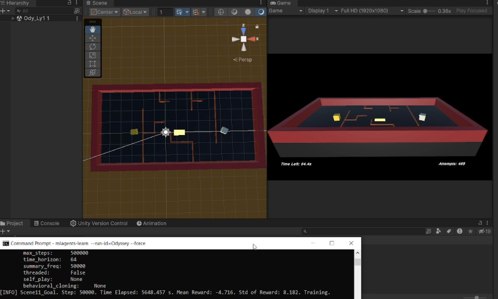
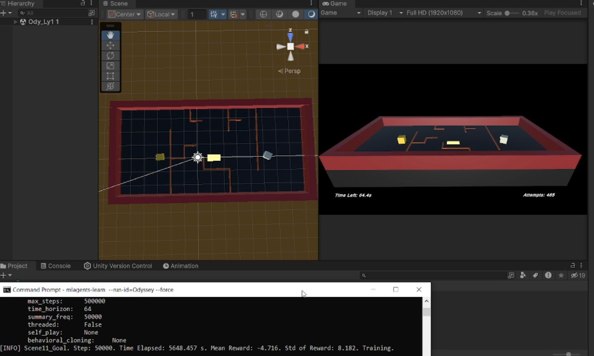

🤖 AI Odyssey
AI Odyssey: Adaptive Intelligence through Reinforcement Learning (RL)
This research-driven Unity ML-Agents project explores deep reinforcement learning (PPO) for adaptive agent behavior. The agent learns to time jumps, reach checkpoints, and complete goals efficiently with rewards and penalties integrated.

 
